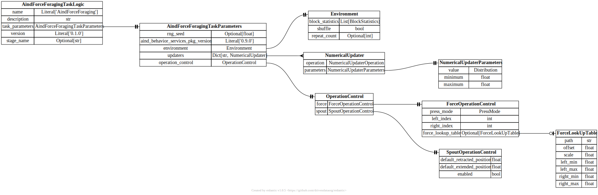

api.task_logic¶
{kind=link}
- pydantic model aind_behavior_force_foraging.task_logic.ActionUpdater[source]¶
Bases:
BaseModel- Fields:
- field target_parameter: UpdateTargetParameter = UpdateTargetParameter.PROBABILITY[source]¶
Target parameter
- field updated_by: UpdateTargetParameterBy = UpdateTargetParameterBy.TIME[source]¶
Independent variable
- field updater: NumericalUpdater [Required][source]¶
Updater
- pydantic model aind_behavior_force_foraging.task_logic.AindForceForagingTaskLogic[source]¶
Bases:
AindBehaviorTaskLogicModel- Config:
extra: str = forbid
validate_assignment: bool = True
validate_default: bool = True
strict: bool = True
str_strip_whitespace: bool = True
- Fields:
- Validators:
coerce_version»version
- field task_parameters: AindForceForagingTaskParameters [Required][source]¶
Parameters of the task logic
- pydantic model aind_behavior_force_foraging.task_logic.AindForceForagingTaskParameters[source]¶
Bases:
TaskParameters- Config:
extra: str = allow
validate_assignment: bool = True
validate_default: bool = True
strict: bool = True
str_strip_whitespace: bool = True
- Fields:
- Validators:
- field environment: Environment [Required][source]¶
Environment settings
- field operation_control: OperationControl = OperationControl(force=ForceOperationControl(press_mode=<PressMode.DOUBLE: 'Double'>, left_index=0, right_index=1, force_lookup_table=None), spout=SpoutOperationControl(default_retracted_position=0, default_extended_position=0, enabled=True))[source]¶
Operation control
- field updaters: Dict[str, NumericalUpdater] [Optional][source]¶
List of numerical updaters
- pydantic model aind_behavior_force_foraging.task_logic.AudioFeedback[source]¶
Bases:
_ContinuousFeedbackBase- Fields:
- Validators:
- pydantic model aind_behavior_force_foraging.task_logic.Block[source]¶
Bases:
BaseModel- Fields:
- pydantic model aind_behavior_force_foraging.task_logic.BlockGenerator[source]¶
Bases:
BaseModel- Fields:
- field block_size: distributions.Distribution = UniformDistribution(family=<DistributionFamily.UNIFORM: 'Uniform'>, distribution_parameters=UniformDistributionParameters(family=<DistributionFamily.UNIFORM: 'Uniform'>, min=50.0, max=60.0), truncation_parameters=None, scaling_parameters=None)[source]¶
Size of the block
- class aind_behavior_force_foraging.task_logic.BlockStatisticsMode(value, names=None, *, module=None, qualname=None, type=None, start=1, boundary=None)[source]¶
Bases:
str,EnumDefines the mode of the environment
- class aind_behavior_force_foraging.task_logic.ContinuousFeedbackMode(value, names=None, *, module=None, qualname=None, type=None, start=1, boundary=None)[source]¶
Bases:
str,EnumDefines the feedback mode
- pydantic model aind_behavior_force_foraging.task_logic.Environment[source]¶
Bases:
BaseModel
- pydantic model aind_behavior_force_foraging.task_logic.ForceLookUpTable[source]¶
Bases:
BaseModel- Fields:
- Validators:
_validate_bounds»all fields
- field left_max: float [Required][source]¶
The upper value of Left force used to linearly scale the input coordinate to.
- Validated by:
_validate_bounds
- field left_min: float [Required][source]¶
The lower value of Left force used to linearly scale the input coordinate to.
- Validated by:
_validate_bounds
- field offset: float = 0[source]¶
Offset to add to the look up table value
- Validated by:
_validate_bounds
- field path: str [Required][source]¶
Reference to the look up table image. Should be a 1 channel image. Value = LUT[Left, Right]
- Validated by:
_validate_bounds
- field right_max: float [Required][source]¶
The upper value of Right force used to linearly scale the input coordinate to.
- Validated by:
_validate_bounds
- pydantic model aind_behavior_force_foraging.task_logic.ForceOperationControl[source]¶
Bases:
BaseModel- Fields:
- Validators:
_validate_press_mode_versus_lut»all fields
- field force_lookup_table: ForceLookUpTable | None = None[source]¶
Look up table for force projection
- Validated by:
_validate_press_mode_versus_lut
- field left_index: int = 0[source]¶
Index of the left sensor
- Validated by:
_validate_press_mode_versus_lut
- pydantic model aind_behavior_force_foraging.task_logic.HarvestAction[source]¶
Bases:
BaseModelDefines an abstract class for an harvest action
- Fields:
- Validators:
_validate_thresholds»all fields
- field action: HarvestActionLabel = HarvestActionLabel.NONE[source]¶
Label of the action
- Validated by:
_validate_thresholds
- field action_updaters: List[ActionUpdater] = [][source]¶
List of action updaters. All updaters are called at the start of a new trial.
- Validated by:
_validate_thresholds
- field amount: float = 1[source]¶
Amount of reward to be delivered
- Validated by:
_validate_thresholds
- field continuous_feedback: ContinuousFeedback | None = None[source]¶
Continuous feedback settings
- Validated by:
_validate_thresholds
- field delay: float = 0[source]¶
Delay between successful harvest and reward delivery
- Validated by:
_validate_thresholds
- field force_duration: float = 0.5[source]¶
Duration that the force much stay above threshold
- Validated by:
_validate_thresholds
- field harvest_mode: HarvestMode [Required][source]¶
Type of the trial
- Validated by:
_validate_thresholds
- field is_operant: bool = True[source]¶
Whether the reward delivery is contingent on licking.
- Validated by:
_validate_thresholds
- field lower_force_threshold: float = 5000[source]¶
Lower bound of the force target region.
- Validated by:
_validate_thresholds
- class aind_behavior_force_foraging.task_logic.HarvestActionLabel(value, names=None, *, module=None, qualname=None, type=None, start=1, boundary=None)[source]¶
Bases:
str,EnumDefines the harvest actions
- class aind_behavior_force_foraging.task_logic.HarvestMode(value, names=None, *, module=None, qualname=None, type=None, start=1, boundary=None)[source]¶
Bases:
str,EnumDefines the trial types
- pydantic model aind_behavior_force_foraging.task_logic.InitiationPeriod[source]¶
Bases:
BaseModelDefines an initiation period
- Fields:
- field abort_on_force: bool = False[source]¶
Whether to abort the trial if a choice is made during the initiation period.
- field duration: distributions.Distribution = Scalar(family=<DistributionFamily.SCALAR: 'Scalar'>, distribution_parameters=ScalarDistributionParameter(family=<DistributionFamily.SCALAR: 'Scalar'>, value=0.5), truncation_parameters=None, scaling_parameters=None)[source]¶
Duration of the initiation period
- pydantic model aind_behavior_force_foraging.task_logic.ManipulatorFeedback[source]¶
Bases:
_ContinuousFeedbackBase- Fields:
- Validators:
- pydantic model aind_behavior_force_foraging.task_logic.NumericalUpdater[source]¶
Bases:
BaseModel- Fields:
- field operation: NumericalUpdaterOperation = NumericalUpdaterOperation.NONE[source]¶
Operation to perform on the parameter
- field parameters: NumericalUpdaterParameters = NumericalUpdaterParameters(value=Scalar(family=<DistributionFamily.SCALAR: 'Scalar'>, distribution_parameters=ScalarDistributionParameter(family=<DistributionFamily.SCALAR: 'Scalar'>, value=0.0), truncation_parameters=None, scaling_parameters=None), minimum=0, maximum=0)[source]¶
Parameters of the updater
- class aind_behavior_force_foraging.task_logic.NumericalUpdaterOperation(value, names=None, *, module=None, qualname=None, type=None, start=1, boundary=None)[source]¶
Bases:
str,Enum
- pydantic model aind_behavior_force_foraging.task_logic.NumericalUpdaterParameters[source]¶
Bases:
BaseModel- field value: distributions.Distribution = Scalar(family=<DistributionFamily.SCALAR: 'Scalar'>, distribution_parameters=ScalarDistributionParameter(family=<DistributionFamily.SCALAR: 'Scalar'>, value=0.0), truncation_parameters=None, scaling_parameters=None)[source]¶
The value of the update. This value will be multiplied by the optional input event value.
- pydantic model aind_behavior_force_foraging.task_logic.OperationControl[source]¶
Bases:
BaseModel- Fields:
- field force: ForceOperationControl = ForceOperationControl(press_mode=<PressMode.DOUBLE: 'Double'>, left_index=0, right_index=1, force_lookup_table=None)[source]¶
Operation control for force sensor
- field spout: SpoutOperationControl = SpoutOperationControl(default_retracted_position=0, default_extended_position=0, enabled=True)[source]¶
Operation control for spout
- class aind_behavior_force_foraging.task_logic.PressMode(value, names=None, *, module=None, qualname=None, type=None, start=1, boundary=None)[source]¶
Bases:
str,EnumDefines the press mode
- pydantic model aind_behavior_force_foraging.task_logic.QuiescencePeriod[source]¶
Bases:
BaseModelDefines a quiescence settings
- field duration: distributions.Distribution = Scalar(family=<DistributionFamily.SCALAR: 'Scalar'>, distribution_parameters=ScalarDistributionParameter(family=<DistributionFamily.SCALAR: 'Scalar'>, value=0.5), truncation_parameters=None, scaling_parameters=None)[source]¶
Duration of the quiescence period
- pydantic model aind_behavior_force_foraging.task_logic.ResponsePeriod[source]¶
Bases:
BaseModelDefines a response period
- field duration: distributions.Distribution = Scalar(family=<DistributionFamily.SCALAR: 'Scalar'>, distribution_parameters=ScalarDistributionParameter(family=<DistributionFamily.SCALAR: 'Scalar'>, value=0.5), truncation_parameters=None, scaling_parameters=None)[source]¶
Duration of the response period. I.e. the time the animal has to make a choice.
- pydantic model aind_behavior_force_foraging.task_logic.SpoutOperationControl[source]¶
Bases:
BaseModel
- pydantic model aind_behavior_force_foraging.task_logic.Trial[source]¶
Bases:
BaseModelDefines a trial
- Fields:
initiation_period (aind_behavior_force_foraging.task_logic.InitiationPeriod)left_harvest (aind_behavior_force_foraging.task_logic.HarvestAction | None)quiescence_period (aind_behavior_force_foraging.task_logic.QuiescencePeriod | None)response_period (aind_behavior_force_foraging.task_logic.ResponsePeriod)right_harvest (aind_behavior_force_foraging.task_logic.HarvestAction | None)
- Validators:
_validate_left_harvest»left_harvest_validate_right_harvest»right_harvest
- field initiation_period: InitiationPeriod = InitiationPeriod(duration=Scalar(family=<DistributionFamily.SCALAR: 'Scalar'>, distribution_parameters=ScalarDistributionParameter(family=<DistributionFamily.SCALAR: 'Scalar'>, value=0.5), truncation_parameters=None, scaling_parameters=None), has_cue=True, abort_on_force=False, abort_on_force_threshold=0)[source]¶
Initiation settings
- field inter_trial_interval: distributions.Distribution = Scalar(family=<DistributionFamily.SCALAR: 'Scalar'>, distribution_parameters=ScalarDistributionParameter(family=<DistributionFamily.SCALAR: 'Scalar'>, value=0.5), truncation_parameters=None, scaling_parameters=None)[source]¶
Time between trials
- field left_harvest: HarvestAction | None = None[source]¶
Specification of the left action
- Validated by:
_validate_left_harvest
- field quiescence_period: QuiescencePeriod | None = None[source]¶
Quiescence settings
- field response_period: ResponsePeriod = ResponsePeriod(duration=Scalar(family=<DistributionFamily.SCALAR: 'Scalar'>, distribution_parameters=ScalarDistributionParameter(family=<DistributionFamily.SCALAR: 'Scalar'>, value=0.5), truncation_parameters=None, scaling_parameters=None), has_cue=True, has_feedback=False)[source]¶
Response settings
- field right_harvest: HarvestAction | None = None[source]¶
Specification of the right action
- Validated by:
_validate_right_harvest
- class aind_behavior_force_foraging.task_logic.UpdateTargetParameter(value, names=None, *, module=None, qualname=None, type=None, start=1, boundary=None)[source]¶
Bases:
str,EnumDefines the target parameters
- class aind_behavior_force_foraging.task_logic.UpdateTargetParameterBy(value, names=None, *, module=None, qualname=None, type=None, start=1, boundary=None)[source]¶
Bases:
str,EnumDefines the independent variable used for the update
- aind_behavior_force_foraging.task_logic.normal_distribution_value(mean: float, std: float) distributions.Normal[source]¶
Helper function to create a normal distribution for a given range.
- Parameters:
mean (float) – The mean value of the normal distribution.
std (float) – The standard deviation of the normal distribution.
- Returns:
The normal distribution type.
- Return type:
distributions.Normal
- aind_behavior_force_foraging.task_logic.scalar_value(value: float) Scalar[source]¶
Helper function to create a scalar value distribution for a given value.
- Parameters:
value (float) – The value of the scalar distribution.
- Returns:
The scalar distribution type.
- Return type:
distributions.Scalar
- aind_behavior_force_foraging.task_logic.uniform_distribution_value(min: float, max: float) UniformDistribution[source]¶
Helper function to create a uniform distribution for a given range.
- Parameters:
min (float) – The minimum value of the uniform distribution.
max (float) – The maximum value of the uniform distribution.
- Returns:
The uniform distribution type.
- Return type:
distributions.Uniform